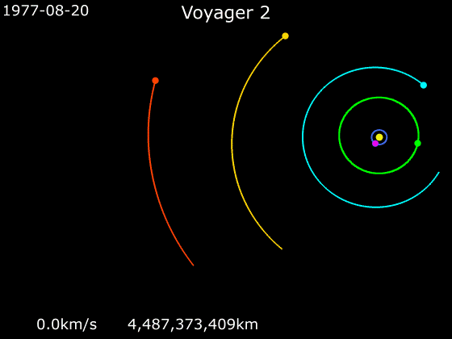

Der Weg der Raumsonde vom Start am 20. August 1977 bis Ende 2000, vorbei an Jupiter, Saturn, Uranus und Neptun.

Schau genau hin
Wie ändert sich die Geschwindigkeit der Sonde bei jedem Vorbeiflug an einem Planeten — und in welche Richtung wird sie abgelenkt? Genau diese Änderung ist der Vektor Δv aus dem Skript.